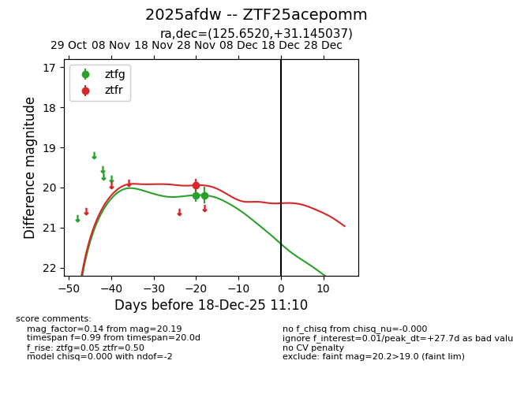
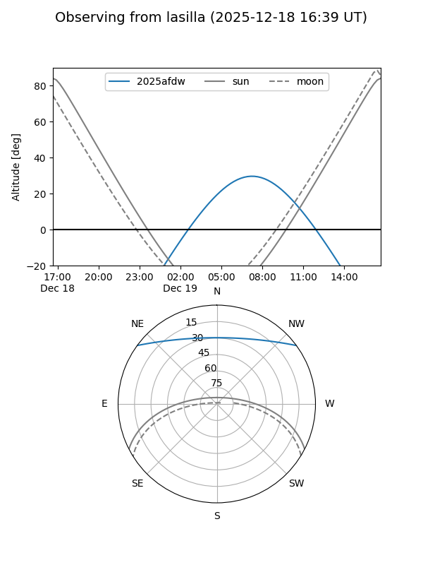
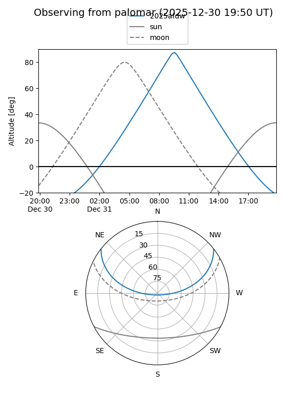
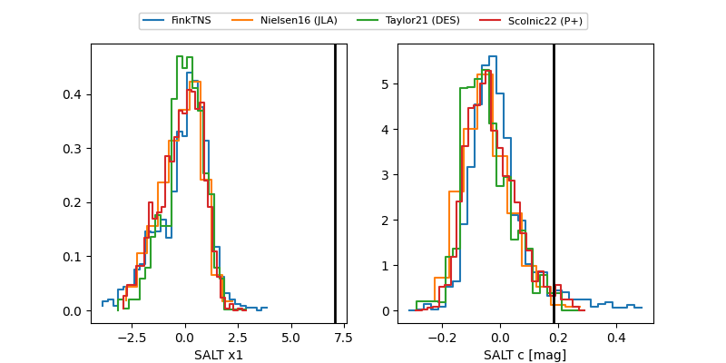

2025afdw
Target 2025afdw at 2025-12-31 17:59
Aliases and brokers:
FINK: link
Lasair: link
ALeRCE: link
TNS: link
YSE: link
alt names
ZTF25acepomm (ztf,fink_ztf)
2025afdw (tns,yse)
Coordinates:
equatorial (ra, dec) = 125.6520,+31.14504
equatorial (HMS+DMS) = 08:22:36.48,+31:08:42.13
galactic (l, b) = (191.5379,+32.06757)
Flags:
Photometry:
last ztfg=20.19, ztfr=19.94
2 ztfg, 1 ztfr detections
Lightcurve

Visibility


Additional plots
